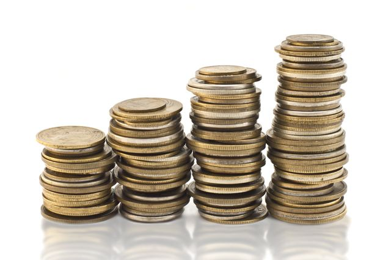
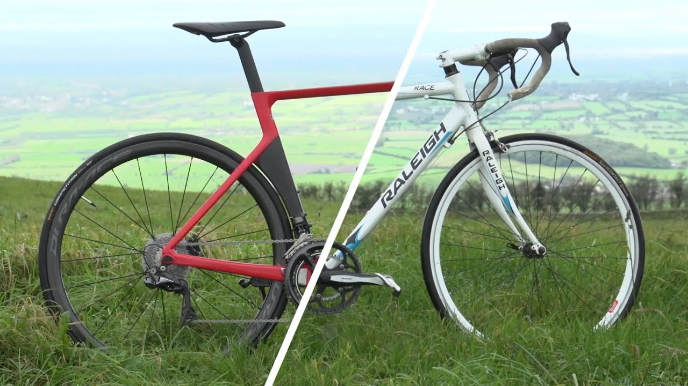

Бюджет
Это первое, что интересует продавца.
Мы еще неоднократно затронем финансовые вопросы ниже, а для начала я лишь подкину пищу для размышлений:
приготовьтесь потратить на велосипед немного больше, чем вы рассчитывали
не забывайте о дополнительном бюджете на аксессуары.
Мы еще неоднократно затронем финансовые вопросы ниже, а для начала я лишь подкину пищу для размышлений:
приготовьтесь потратить на велосипед немного больше, чем вы рассчитывали
не забывайте о дополнительном бюджете на аксессуары.


Где и как часто будете кататься.
Здесь можно выделить три категории:
При выборе велосипеда нужно отталкиваться от того, собираетесь ли вы его регулярно эксплуатировать. Дело в том, что компоненты дешевых велосипедов не рассчитаны на большой сезонный пробег.
Можно на словах описать продавцу ваши планы, и он вас прекрасно поймет. Но подсчитать свой предполагаемый пробег несложно. Допустим, что:
средняя скорость у вас будет 20 км/ч (это хорошо, ибо она отличается от крейсерской по ровному асфальту без перекрестков и перепадов высот) вы катаетесь раз в неделю по 1,5 часа чистого времени (что с перерывом на отдых превращается минимум в двухчасовую прогулку).
Без подготовки выезд даже в 30 км вас может сильно утомить, но будем оптимистичны.
- город (асфальт);
- парки (грунт);
- бездорожье (сильно пересеченная местность).
При выборе велосипеда нужно отталкиваться от того, собираетесь ли вы его регулярно эксплуатировать. Дело в том, что компоненты дешевых велосипедов не рассчитаны на большой сезонный пробег.
Можно на словах описать продавцу ваши планы, и он вас прекрасно поймет. Но подсчитать свой предполагаемый пробег несложно. Допустим, что:
средняя скорость у вас будет 20 км/ч (это хорошо, ибо она отличается от крейсерской по ровному асфальту без перекрестков и перепадов высот) вы катаетесь раз в неделю по 1,5 часа чистого времени (что с перерывом на отдых превращается минимум в двухчасовую прогулку).
Без подготовки выезд даже в 30 км вас может сильно утомить, но будем оптимистичны.
Отличее велосипеда за 10 000 и за 30 000 тысяч рублей.
Наверное, вы уже походили по веломагазинам или сделали это виртуально. При этом вы увидели великое множество велосипедов, похожих друг на друга, но отличающихся на первый взгляд лишь ценой.
Как правило, новички смотрят в сторону моделей в самом нижнем ценовом сегменте. Однако отличия есть, и они весьма существенные.
Как правило, новички смотрят в сторону моделей в самом нижнем ценовом сегменте. Однако отличия есть, и они весьма существенные.
- Вес велосипеда
- Здесь все просто — чем дороже велосипед, тем он легче. Казалось бы, 2-4 кг не играют особой роли по сравнению с вашим весом. Однако помните, что вы везете эти килограммы на протяжении всей поездки, и это сказывается к ее концу. Кроме того, даже пара килограмм имеет большое значение при разгоне и на подъемах. А на пересеченной местности или скользкой дороге вам проще будет удержать контроль над более легким велосипедом. Кстати, даже у моделей с одинаковым назначением и ценой вес может отличаться на 1-2 кг, так что обращайте на него внимание. Однако учтите, что данные в Интернете могут расходиться с реальностью.
- Качество компонентов
- Капитан Очевидность подсказывет, что основу дорогого велосипеда составляет рама более высокого качества, на которую навешаны более надежные компоненты. Дешевые компоненты (например, втулки) не рассчитаны на активную эксплуатацию и потому долго не живут. Однако менее очевидно то, что дешевые рамы и прочие составляющие тяжелее, что снова возвращает нас к весу.
Насколько все это важно
Возможно, вы думаете, что для начинающего байкера вес и качество компонентов не имеют особого значения, и дешевый велосипед все равно подойдет. Но тут есть интересный момент.